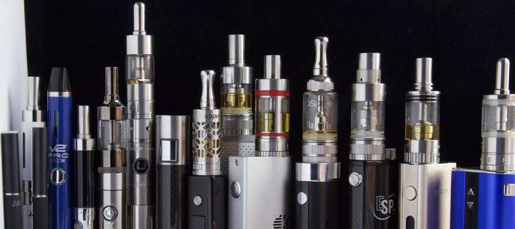

Bienvenu sur ce petit blog qui regroupe des informations sur la cigarette electronique qui sont encore aujourd'hui malheuresesement trop peu connus.
Bon bon voyage.
Voici quelques exemples de materiel.

Voici une photo de plusieurs types de Cigarettes Electroniques

La un photo de ce que l'on appelle des atomiseurs
Ici nous avons une batterie également appellé "Mod"
Enfin les E-liquide ou Juices